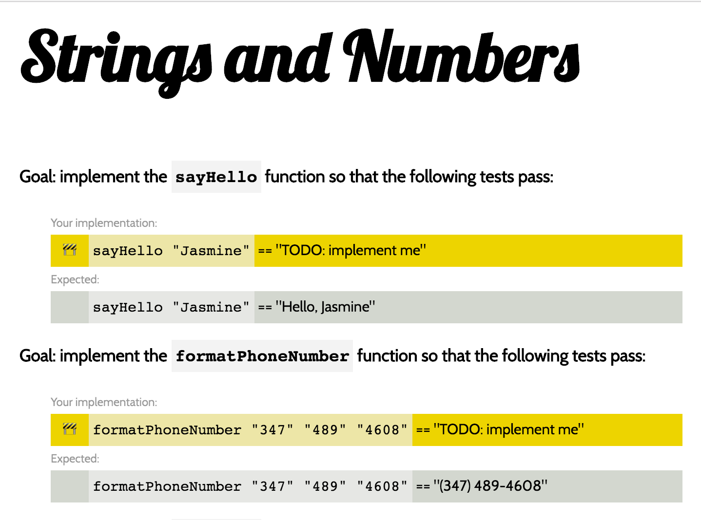

The Basic Building Blocks of Elm
In this lesson, you'll learn how to work with the basic data structures of Elm. You'll be working with a custom application that we've written where you'll be asked to implement some basic transformations.
Goals
- Practice defining and using functions in Elm
- Learn how to use strings, lists, and records.
Steps
Elm Basics Exercises
Get a copy of the elm-basics code:
git clone https://github.com/elmbridge/elm-basics.git
cd elm-basics
Start Elm Reactor to build the project:
elm reactor
Now open http://localhost:8000/ in your web browser, and go to Main.elm.
You should see something like this:

This application contains a series of unimplemented functions designed to teach you about the basic data structures of Elm. All the functions that you need to implement live in Main.elm. By default, you'll see some work-in-progress emojis, and when you successfully implement a function, you'll see a heart. But if you'd like to customize the emojis or the colors, you can do so in Style.elm. When you're done poking around, go back to Main.elm to start the exercises.
Working with Strings
Like many languages, Elm has a String data type to store text. In this step, you should complete all the unimplemented functions for the string section of the application. Once you're ready to get started, navigate to the sayHello function.
sayHello friendsName =
"TODO: implement me"
You'll notice that this assertion is currently failing in your browser. Your job is to make it pass! Once you have a guess, change and save the code in Main.elm — refresh your browser and you'll learn if you implemented it correctly. If you've made a syntax error, the page will display an error message that will tell you what to fix.
You should have enough to get started! A few tips:
- Remember, the
++operator is used to add strings together. - If you want to transform a string in some way, you should use the
Stringmodule to do so. For instance, if you wanted to get the last letter of a string, you might use theString.rightfunction like this:
String.right 1 someStringVariable
If you get stuck, flag down an instructor! They are here to help.
Conditional Logic
Elm has all the traditional structures for conditional logic, including if, else, case, and the ==, <, >, &&, and || operators. (Note: the "not equal" operator is a non-standard /=.) Here's what that looks like in practice:
numberToWords num =
if num == 0 then
"zero"
else if num == 1 then
"one"
else
"a number larger than one"
--here's the same function, implemented with a case expression
numberToWords num =
case num of
0 -> "zero"
1 -> "one"
_ -> "a number larger than one"
Elm enforces that all branches of an if or case expression must return the same type of value — so all if expressions must include a corresponding else clause, and all possible values must be accounted for in a case expression.
Take a shot at completing the assertions for if expressions!
Lists
In Elm, you can use a List to store a collection of elements. Unlike dynamic languages, though, Elm lists are typed — every element in a list must be the same kind of thing. You can't have a list that stores both strings and numbers, for example.
For this step, you should complete all the List assertions. Some tips:
- In another language, you might solve these assertions by creating an empty list, and incrementally adding things to it as you iterate over the passed-in list. That's not possible in Elm — once you've declared a variable in Elm, you can never change it. You will have to use more complicated
Listfunctions, likeList.map. - Most common functions that operate on lists live in the
Listmodule. The order of arguments to these functions may be disorienting — in functional programming languages, the convention is to have the data you are operating on be the last argument to a function, not the first. - Many of these functions consume a function. To use them, you can use an anonymous function, like this:
List.map (\list_element -> list_element * 2) [1,2,3]
Note: the value after the \ is the input to the function, while whatever is after the -> sign is the output.
Good luck!
Records
Just like JavaScript has objects to store name-value pairs, Elm has records. Unlike JavaScript's objects, though, Elm treats the structure of a record as immutable. Once a record has been defined, you cannot add or remove a field, or change the type of a field.
Unlike strings and lists, records are a special data type that has a special syntax for getting and setting values. You can create a record like this:
aNewRecordAppears =
{ fieldOne = "value", anotherField = 1111 }
To get the value out of a record, you can use . syntax:
aNewRecordAppears.fieldOne
And to update a specific field, you use | syntax:
{ aNewRecordAppears | fieldOne = "a new value for the specified field" }
There is no Record module — all record functions are implemented through special syntax. You can learn more about the type in the official Elm guide on records.
Once you've finished this step, feel free to complete some of the bonus assertions, or look at some of the implementation code in the main function. Next up, we'll talk about how to build applications in Elm.